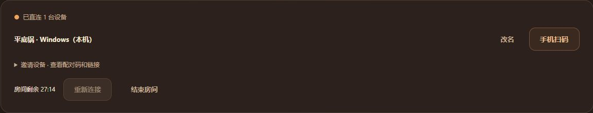
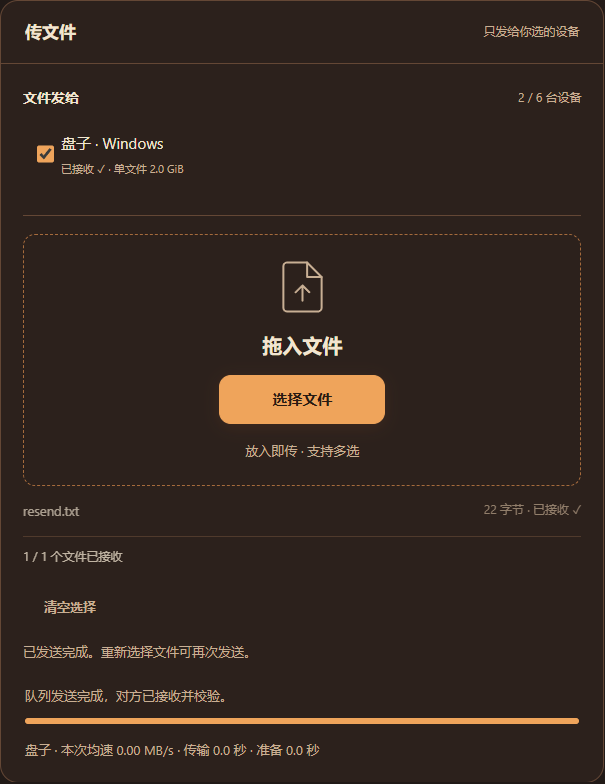
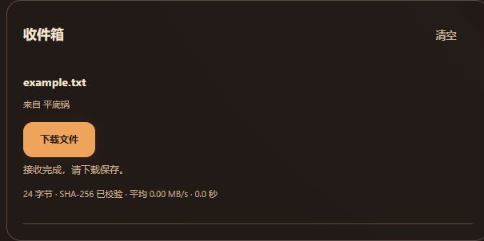

使用说明
两台设备连接同一网络，打开热热传。传输时保持双方页面打开。
1. 创建房间，连接另一台设备
在任意一台设备上点击“创建房间”。另一台设备打开热热传，输入 6 位配对码；手机也可以扫描房间二维码。等待设备列表显示“已直连”。一个房间最多 6 台设备，可以点击“改名”区分设备。

2. 选好设备，放入文件
在“文件发给”中勾选接收设备，把文件拖进窗口，或点击“选择文件”。文件选好后自动发送，无需再点确认；尚未连接时会等待连接。可以选择多个接收设备；未勾选的设备不会收到该文件。页面会显示进度和 MB/s，准备校验耗时单独计算。

3. 在收件箱保存
接收端自动接收并校验文件，不需要再确认。完成后点击“下载文件”，按浏览器提示保存。需要清理临时副本时点击收件箱“清空”；已经下载的文件不受影响。

文字、链接和代码
在“聊两句”中输入内容后点击“发送”。电脑上 Enter 发送，Shift+Enter 换行。文字发给房间内所有已连接的设备，文件传输时也能聊天。聊天记录仅保留在当前页面。
三个常见用法
- Windows 和 Mac 互传资料：输入配对码连接，勾选对方设备，把文档或压缩包发过去。
- 手机照片传到电脑：手机扫码加入房间，选择照片，电脑收到后下载保存。部分网络下 Windows 与 iPhone 可能无法直连。
- 几台设备共用一条链接：把链接发到聊天区，房间里的设备都能收到；文件仍可单独指定接收方。
连接与传输问题
- 必须连接同一个 Wi-Fi 吗？
- 设备应连接同一局域网，电脑可以接网线、手机连该路由器的 Wi-Fi。访客网络或设备隔离可能阻止直连。网页与配对服务需要联网。
- 手机扫码后打不开或一直连接中？
- 可以在 Safari、Chrome 等独立浏览器中打开，再输入配对码。微信内置浏览器可能限制连接；网站不能保证自动跳转到系统默认浏览器。部分 Windows 与 iPhone 组合的兼容问题仍待优化。
- 为什么实际速度不同？
- 速度受两台设备之间的网络、浏览器、磁盘和同时接收的设备数影响。MB/s 是每秒百万字节；准备校验不计入传输速度，不代表 Wi-Fi 或网卡的标称速率。
- 支持多大的文件？
- 支持临时磁盘存储的浏览器单文件上限为 2 GiB；只能使用页面内存时为 32 MiB。以页面显示的接收能力为准。每次最多选择 20 个文件。
- 断线、刷新或关掉页面会怎样？
- 同一页面短暂断线可以尝试续传。刷新可恢复未过期的房间连接，但正在传的文件需要重发。请不要在传输时让设备休眠或关闭页面。房间有效期 30 分钟，配对码有效期 5 分钟。
仍有问题，可以查看联系页面。请保留原文件，不要把房间链接或私密文件放进公开反馈。